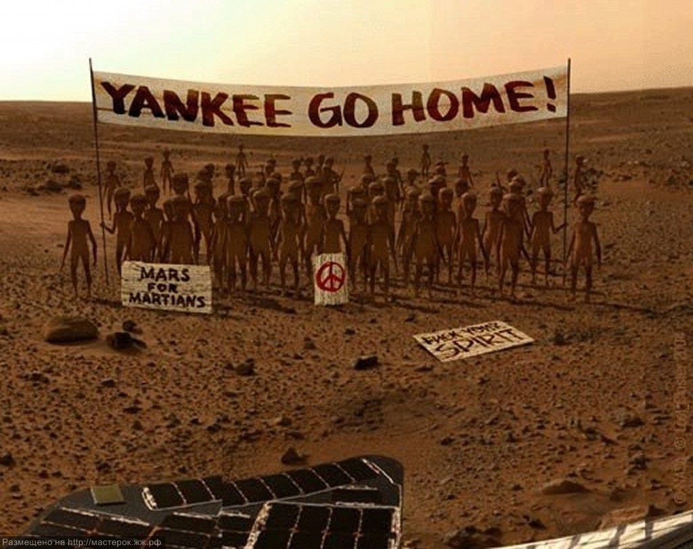
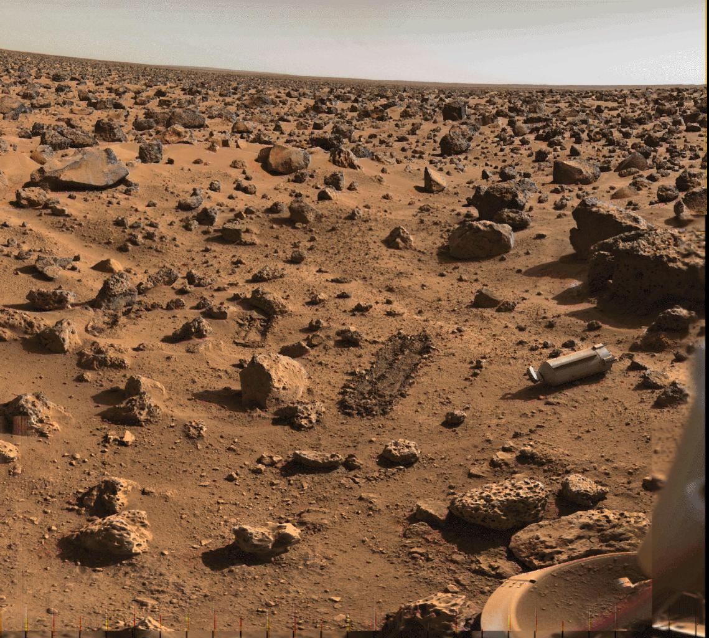
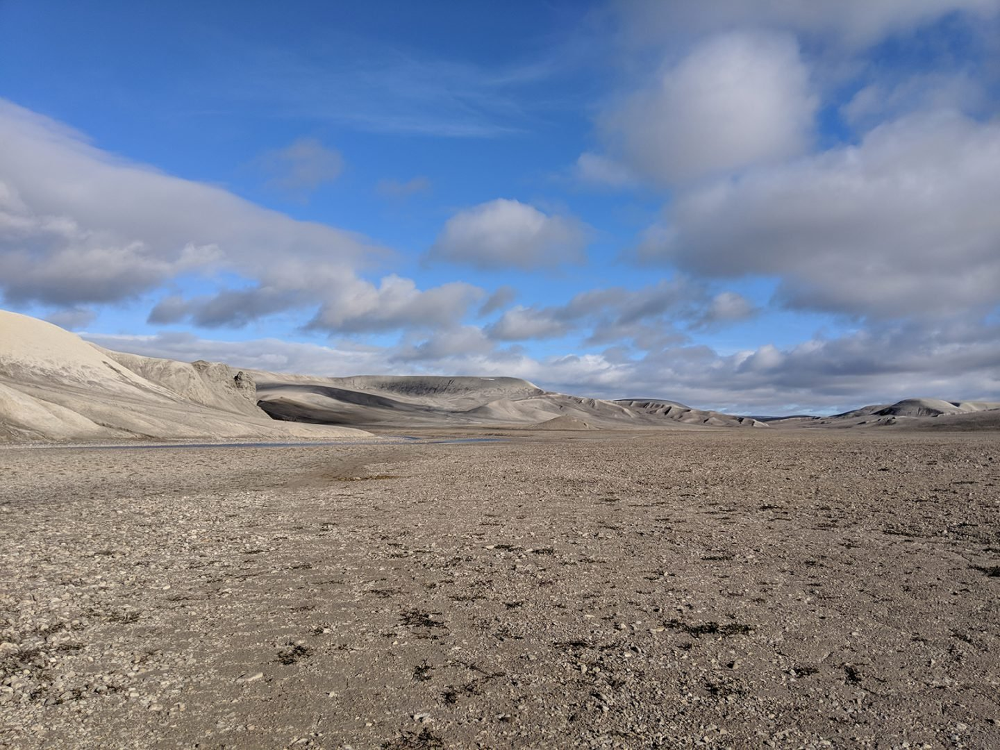
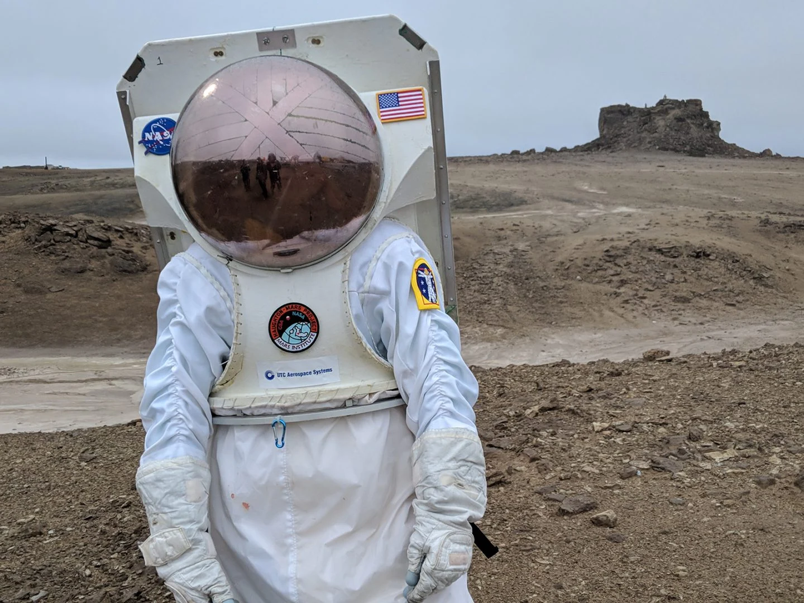
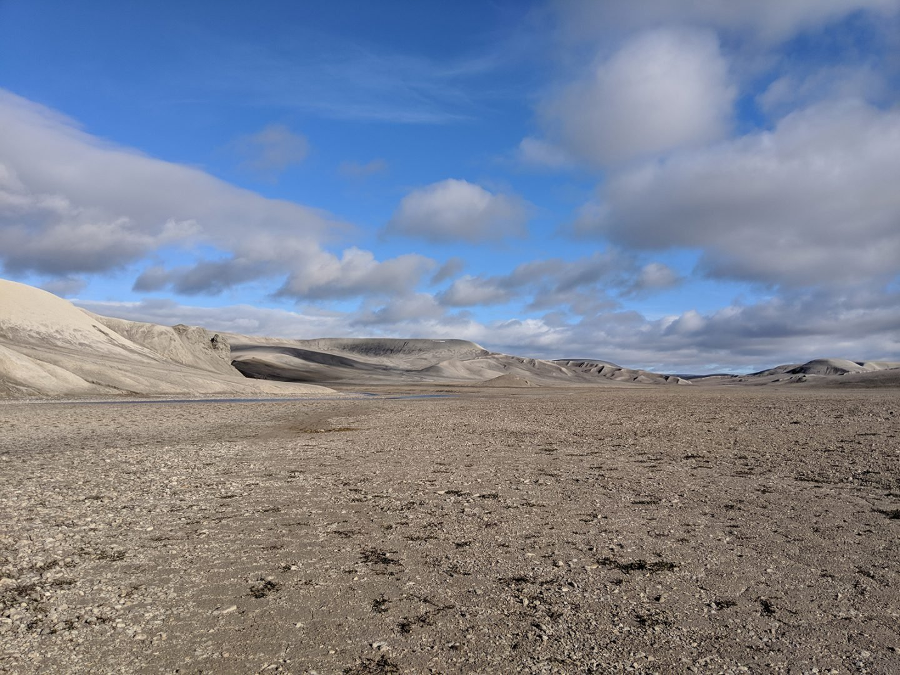
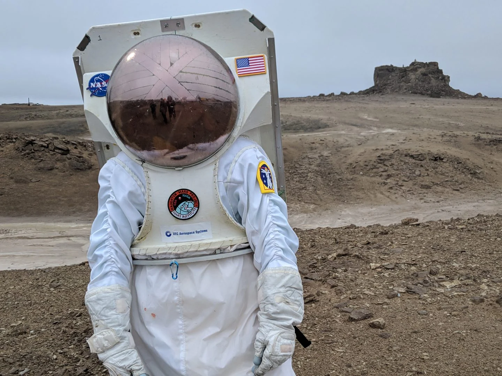

9 мифов о Марсе, в которые многие верят. А зря
Миф 1. Марс ярко‑красный
Марс традиционно называют Красной планетой, и в фильмах его пейзажи чаще всего показывают через
фильтр именно этого цвета. Однако на самом деле он совсем не такой. Если вы посмотрите на
фотографии марсоходов Curiosity и Sojourner, то увидите, что пустыня там окрашена в жёлто‑серые
оттенки.
Марс действительно выглядит красным с орбиты из‑за богатой окисленным железом пыли — в его
атмосфере буквально летает ржавчина.
Но если рассматривать планету с поверхности, а не из космоса, она будет желтоватой.
 Поверхность Марса со следами Curiosity. Изображение: NASA / JPL‑Caltech / MSSS
Кроме того, на Марсе есть места коричневого, зеленоватого, золотистого или даже почти чёрного
цвета — всё зависит от того, какие минералы там преобладают. Небо на этой планете тоже не
красное, а серое, желтоватое или голубое в разное время суток.
Поверхность Марса со следами Curiosity. Изображение: NASA / JPL‑Caltech / MSSS
Кроме того, на Марсе есть места коричневого, зеленоватого, золотистого или даже почти чёрного
цвета — всё зависит от того, какие минералы там преобладают. Небо на этой планете тоже не
красное, а серое, желтоватое или голубое в разное время суток.
Миф 2. Марс горячий
Это заблуждение связано с предыдущим. Обычно у людей красный цвет ассоциируется с высокой
температурой, поэтому многие искренне полагают, что на Марсе очень жарко и из‑за этого он
побагровел.
Тот же Фрэнк Герберт, например, явно ориентировался на Марс, описывая свою Дюну: пустынная
оранжевая планета с белыми полярными шапками, жители которой страдают от жары. Но реальный Марс
совершенно не похож на Арракис.
В действительности средняя температура здесь равняется −63 °С — довольно прохладно, мягко
говоря.
 Жарче всего на Марсе летом на экваторе — температура может достигать аж 27 °C, а однажды были
зафиксированы рекордные 35 °C. Зимой же может ударить мороз: от −80 до −125 °С. А на полюсе все
−153 °C.
Так что считать Марс жаркой пустыней, красным подобием Сахары, совершенно неверно.
Жарче всего на Марсе летом на экваторе — температура может достигать аж 27 °C, а однажды были
зафиксированы рекордные 35 °C. Зимой же может ударить мороз: от −80 до −125 °С. А на полюсе все
−153 °C.
Так что считать Марс жаркой пустыней, красным подобием Сахары, совершенно неверно.
Миф 3. На Марсе бывают мощные ураганы и пыльные бури
Ещё одна особенность, которой наделяют Красную планету фантасты и которой она в действительности не обладает, — мощные ветра. В том же «Марсианине» пыльная буря оказалась настолько сильной, что перевернула многотонный взлётно‑посадочный модуль космического корабля. Однако на самом деле атмосфера здесь слишком разрежена, чтобы в ней могли случаться такие бури. И самый страшный ураган человек будет ощущать как лёгкий ветерок, способный разве что волосы взъерошить. Пожалуйста, если вы читаете это, стоя на Марсе, не снимайте шлем скафандра ради проверки! Это небезопасно. Пыльные бури на Красной планете действительно случаются, и они приносят исследователям NASA немало неприятностей. Но не потому, что переворачивают марсоходы и уносят их, а потому, что засыпают песком солнечные панели, и это может привести к обесточиванию аппарата.
...Learn MoreМиф 4. На поверхности Марса есть каналы
 В конце XIX — начале XX века учёные считали, что по поверхности Марса разбросаны некие каналы,
возможно, использовавшися для орошения. Одни считали, что это доказывает существование на Марсе
развитой цивилизации, способной создавать продвинутые гидротехнические сооружения. Другие
объясняли появление «каналов» естественными причинами — рельеф, мол, такой.
Однако позднее, в 1907 году, учёные отказались от идеи, что на Марсе эти гидротехнические
сооружения есть, объяснив их существование оптической иллюзией.
Полученные через пару лет первые фотографии подтвердили эту версию. А прилетевший в 1965 году
зонд Mariner 4, передавший близкие снимки поверхности планеты, окончательно похоронил теорию
«марсианских каналов».
В конце XIX — начале XX века учёные считали, что по поверхности Марса разбросаны некие каналы,
возможно, использовавшися для орошения. Одни считали, что это доказывает существование на Марсе
развитой цивилизации, способной создавать продвинутые гидротехнические сооружения. Другие
объясняли появление «каналов» естественными причинами — рельеф, мол, такой.
Однако позднее, в 1907 году, учёные отказались от идеи, что на Марсе эти гидротехнические
сооружения есть, объяснив их существование оптической иллюзией.
Полученные через пару лет первые фотографии подтвердили эту версию. А прилетевший в 1965 году
зонд Mariner 4, передавший близкие снимки поверхности планеты, окончательно похоронил теорию
«марсианских каналов».
Миф 5. Иногда Марс на небе становится больше, чем полная Луна
Периодически — в основном в августе — в интернете можно увидеть картинку, на которой Марс
запечатлён рядом с Луной, и они выглядят практически идентичными по размеру. Это объясняется
тем, что Красная планета время от времени встаёт в противостояние с Землёй, приближаясь к ней на
минимальное расстояние.
 Но несмотря на то, что Марс на самом деле вдвое больше Луны, с Земли он выглядит в 500 раз
меньше нашего естественного спутника.
Даже при рекордном сближении Земли и Красной планеты последняя смотрится просто как яркая точка,
которую уж никак нельзя спутать с Луной.
Марс и Луна, снимок 2005 года
Марс и Луна, снимок 2005 года. Изображение: Amirber / Wikimedia Commons
И да, упоминаемая в этой байке информация о том, что Красная планета и Земля сближаются только
раз в 60 000 лет, тоже неправда. В реальности противостояние планет случается каждые два
года.
Но несмотря на то, что Марс на самом деле вдвое больше Луны, с Земли он выглядит в 500 раз
меньше нашего естественного спутника.
Даже при рекордном сближении Земли и Красной планеты последняя смотрится просто как яркая точка,
которую уж никак нельзя спутать с Луной.
Марс и Луна, снимок 2005 года
Марс и Луна, снимок 2005 года. Изображение: Amirber / Wikimedia Commons
И да, упоминаемая в этой байке информация о том, что Красная планета и Земля сближаются только
раз в 60 000 лет, тоже неправда. В реальности противостояние планет случается каждые два
года.
Миф 6. На Марсе есть лицо
В 1976 году космические аппараты Viking 1 и Viking 2 сделали серию снимков марсианского региона,
которому дали название Кидония. На одном из них обнаружилось нечто, напоминающее огромное
человеческое лицо.
 Множество паранаучных изданий сразу заявили, что это творение потерянной высокоразвитой
цивилизации, и окрестили выпуклость «марсианским сфинксом».
Правда, когда космические корабли Mars Global Surveyor, Mars Reconnaissance Orbiter и Mars
Express сделали новые снимки Кидонии, стало совершенно очевидно, что никакого лица там нет.
Планета Марс и её лицо
Лицо на Марсе в лучшем качестве. Изображение: NASA / JPL / University of Arizona
Но это не мешает фанатам уфологии периодически вспоминать о существовании на Марсе «сфинкса».
Множество паранаучных изданий сразу заявили, что это творение потерянной высокоразвитой
цивилизации, и окрестили выпуклость «марсианским сфинксом».
Правда, когда космические корабли Mars Global Surveyor, Mars Reconnaissance Orbiter и Mars
Express сделали новые снимки Кидонии, стало совершенно очевидно, что никакого лица там нет.
Планета Марс и её лицо
Лицо на Марсе в лучшем качестве. Изображение: NASA / JPL / University of Arizona
Но это не мешает фанатам уфологии периодически вспоминать о существовании на Марсе «сфинкса».
Миф 7. На Марсе была ядерная война
Как несложно заметить, условия на Марсе в настоящий момент так себе: радиация и тоненькая
бескислородная атмосфера над холодной пустыней. По всей видимости, раньше здесь было поприятнее
— вроде как даже имелись океаны и реки. Но потом что‑то случилось, и Красная планета стала
такой, как сегодня.
Почему это произошло? Ну, большинство учёных полагают, что в так называемый гесперийский период
(3,5–2,5 миллиарда лет назад) Марс обладал океанами и плотной атмосферой. Но позже — 700
миллионов лет назад — её сдуло солнечным ветром.
Вот что бывает, когда забываешь отрастить мощное магнитное поле, как у Земли.
 Но существует и другая версия, которой придерживаются фанаты альтернативной науки. Якобы
давным‑давно на Марсе жили две высокоразвитые цивилизации, Кидония и Утопия. Что‑то они между
собой не поделили, и как давай друг в друга пулять ядерными ракетами, пока не превратили планету
в безжизненную пустыню.
А потом все благополучно умерли. Поэтому‑де на Марсе высокий уровень радиации и повсюду кратеры
— воронки от атомных взрывов.
Изображение системы каньонов долины Маринер, Марс
Изображение системы каньонов долины Маринер на Марсе. Изображение: NASA / JPL‑Caltech
Правда, сторонники этой теории не могут объяснить, почему никаких следов таинственные Кидония и
Утопия после себя не оставили. На Земле археологи памятники всяких Древних Египтов невооружённым
взглядом находят, а тут целые цивилизации с атомным оружием ни одного захудалого домишки после
себя не оставили.
Да и кратеры на Марсе имеют куда более очевидное объяснение: атмосфера тонкая, астероиды
затормозить не может, вот они и бахают со всей силы. А радиация на Красной планете — результат
воздействия на неё космических лучей высоких энергий, а не каких‑то там бомб.
В общем, совершенно понятно, что никакой ядерной войны и высокоразвитой цивилизации на Марсе не
было — тут бы бактерии хоть какие найти, а о высокоорганизованной жизни и речи не идёт.
Но существует и другая версия, которой придерживаются фанаты альтернативной науки. Якобы
давным‑давно на Марсе жили две высокоразвитые цивилизации, Кидония и Утопия. Что‑то они между
собой не поделили, и как давай друг в друга пулять ядерными ракетами, пока не превратили планету
в безжизненную пустыню.
А потом все благополучно умерли. Поэтому‑де на Марсе высокий уровень радиации и повсюду кратеры
— воронки от атомных взрывов.
Изображение системы каньонов долины Маринер, Марс
Изображение системы каньонов долины Маринер на Марсе. Изображение: NASA / JPL‑Caltech
Правда, сторонники этой теории не могут объяснить, почему никаких следов таинственные Кидония и
Утопия после себя не оставили. На Земле археологи памятники всяких Древних Египтов невооружённым
взглядом находят, а тут целые цивилизации с атомным оружием ни одного захудалого домишки после
себя не оставили.
Да и кратеры на Марсе имеют куда более очевидное объяснение: атмосфера тонкая, астероиды
затормозить не может, вот они и бахают со всей силы. А радиация на Красной планете — результат
воздействия на неё космических лучей высоких энергий, а не каких‑то там бомб.
В общем, совершенно понятно, что никакой ядерной войны и высокоразвитой цивилизации на Марсе не
было — тут бы бактерии хоть какие найти, а о высокоорганизованной жизни и речи не идёт.
Миф 8. И если её повторить, Марс снова станет пригодным для жизни
alt="Илон Маск предлагает взорвать Марс ядерными бомбами"> В 2018 году в интервью американскому комику Стиву Кольберу Илон Маск предложил бахнуть по полярным шапкам Марса ядерными бомбами. Это якобы должно было согреть его, растопить льды, устроить парниковый эффект и создать на поверхности Красной планеты новый океан. А там можно и колонизацию начинать.  Вообще, если посмотреть интервью, а не читать его пересказы, можно заметить, что Маск пошутил. Но многие приняли его план за чистую монету и начали спорить, возможно ли сделать планету пригодной для жизни. Учёные из Стэнфорда шутки ради подсчитали, сколько энергии понадобится для превращения марсианских полярных шапок в жидкий океан.  И результаты неутешительны: даже если одномоментно взорвать весь мировой запас ядерного оружия на Марсе, этого не хватит, чтобы испарить твёрдый углекислый газ на полюсах и создать парниковый эффект в тонкой атмосфере планеты.
...Learn MoreМиф 9. Кадры с Марса снимают на острове Девон
Довольно популярная теория заговора, которая гласит, что NASA не запускала Curiosity,
Opportunity и другие роверы на Марс, а вместо этого катает свои аппараты по острову Девон в
Канаде, рядом с Гренландией. Это пустынная и холодная земля, покрытая песком и льдом, и она
довольно похожа на Красную планету.
 Доказательством скептики считают разнообразные подозрительные объекты, которые то и дело
попадают в объективы NASA: выброшенные на берег рыбы, пробегающие игуаны, крысы, паукообразные
обезьяны и человеческие тени. Последние, видимо, принадлежат членам съёмочной команды.

Правда, на острове Девон не водятся игуаны и паукообразные обезьяны — климат не тот. Да и
простых грызунов там найти довольно затруднительно.

В принципе, вы можете посетить это место с помощью Google Earth и посмотреть, правда ли тамошние
пейзажи похожи на снимки с Curiosity (вообще разница довольно заметная). Марсоходов там не
найти, зато можно нарваться на случайно заплывшего на остров белого медведя.
Доказательством скептики считают разнообразные подозрительные объекты, которые то и дело
попадают в объективы NASA: выброшенные на берег рыбы, пробегающие игуаны, крысы, паукообразные
обезьяны и человеческие тени. Последние, видимо, принадлежат членам съёмочной команды.

Правда, на острове Девон не водятся игуаны и паукообразные обезьяны — климат не тот. Да и
простых грызунов там найти довольно затруднительно.

В принципе, вы можете посетить это место с помощью Google Earth и посмотреть, правда ли тамошние
пейзажи похожи на снимки с Curiosity (вообще разница довольно заметная). Марсоходов там не
найти, зато можно нарваться на случайно заплывшего на остров белого медведя.